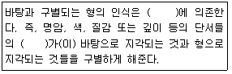
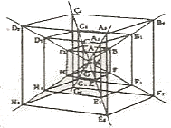
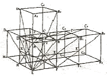
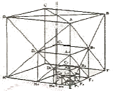
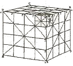
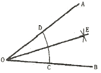

컴퓨터그래픽스운용기능사 (2015-01-25 기출문제)
1과목: 산업디자인 일반
1. 연극, 영화, 음악회, 전람회 등 고지적 기능의 포스터는?
- 상품 광고 포스터
- 계몽 포스터
- 문화 행사 포스터
- 공공 캠패인 포스터
(정답률: 96%)

2. 실내 디자인에 있어 미적 효용성을 더해주는 액센트적 역할을 하는 실내 소품 선택시 고려할 사항으로 거리가 먼 것은?
- 실내 소품은 개인의 개성을 나타낼 수 있어야 한다.
- 소품을 지나치게 많이 사용하면 혼란을 주기 때문에 주의해야 한다.
- 소품은 주변 물건과의 디자인 성격을 잘 고려하여 적절하게 배치해야 한다.
- 소품을 거는 벽은 되도록 진한 원색이나 무늬가 많은 것을 사용하여 주의를 끌어야 한다.
(정답률: 94%)
3. 포장디자인의 조건과 거리가 가장 먼 것은?
- 유통시 취급 및 보관의 유의점을 고려한다.
- 제품의 보호기능을 고려한다.
- 제품의 성격을 충분히 고려한다.
- 시장 경기의 흐름을 충분히 고려한다.
(정답률: 92%)
4. 보기의 ( ) 안에 공통적으로 들어갈 용어는?

- 연속
- 대비
- 조화
- 강조
(정답률: 81%)
5. 디자인 전개 과정의 분석내용 중 디자인 문제의 범위 내에서 제품을 이루는 부품을 하나하나 분류하여 각각에 대해 평가, 분석하여 과도한 부분이 있으면 줄이거나 제거하는 분석은?
- 사용 과정 분석
- 관계 분석
- 원인 분석
- 가치 분석
(정답률: 60%)
6. 다음 중 제품디자인에서 아이디어를 탐색하는 방법으로 적합하지 않은 것은?
- 브레인스토밍
- 상관표 작성
- 시네틱스
- 형태학적 차트 작성
(정답률: 52%)
7. 아이디어 스케치에 대한 설명이 틀린 것은?
- 자유로운 이미지의 표현
- 신속한 아이디어 전개
- 이미지를 포착하기 위한 방법
- 정확도와 정밀성이 높은 그림
(정답률: 91%)
8. 기업이 일관된 이미지를 부여함으로써 어디서나 시각적으로 이미지가 구별될 수 있도록 한 체계적인 이미지 전략은?
- CF
- BI
- CI
- DM
(정답률: 82%)
9. 아이덴티티 디자인 중 기본시스템에 해당하지 않는 것은?
- 로고타입
- 서체
- 시그니처
- 광고
(정답률: 77%)
10. 형태를 분류할 때 기하학의 도형과 같은 조형요소로 이루어진 형태는?
- 현실적 형태
- 이념적 형태
- 자연 형태
- 유기적 형태
(정답률: 69%)
11. 게슈탈츠(gestalt) 요인이 아닌 것은?
- 시각성의 요인
- 유사성의 요인
- 폐쇄성의 요인
- 근접성의 요인
(정답률: 76%)
12. 실내디자인에 있어서 벽에 대한 설명으로 가장 옳은 것은?
- 공간의 구분, 공기의 차단, 소리의 차단, 보온 등의 기능을 갖고 있으며 인간의 시선이 가장 많이 머무르는 공간 요소이다.
- 대지와 차단 시켜주고, 걸어 다닐 수 있고 가구를 놓을 수 있도록 고른 면을 제공한다.
- 시선이 별로 가지 않으므로 기각적 요소가 약하다.
- 건축에서 마감한 공간을 내부에서 재마감하여 전기 조명 설치, 방음, 단열, 흡음, 통신 등의 기능을 담당한다.
(정답률: 83%)
13. 인간과 도구의 상호작용(interaction)이 중요한 연구 대상인 분야는?
- 스페이스 디자인(Space Design)
- 커뮤니케이션 디자인(Communication Design)
- 프로덕트 디자인(Product Design)
- 인테리어 디자인(Interior Design)
(정답률: 55%)
14. 아르누보에 관한 설명 중 옳은 것은?
- 회화, 건축, 공예, 인테리어, 그래픽 등의 분야에 영향을 주었다.
- 기본적인 형태의 반복, 동심원 등의 기하학적 문양을 선호하였다.
- 대량생산을 위한 합리적인 기능성 장식을 사용하였다.
- 시대를 앞선 기발하고 점진적인 디자인을 사용하였다.
(정답률: 63%)
15. 새로운 디자인으로 인하여 나타나는 제품의 발전 기본 요소와 거리가 먼 것은?
- 침체된 시장에서 활로 개척
- 구성 요소(부품)의 대형화
- 변형된 형태의 개념(새로운 스타일 개발)
- 제품 이용자의 욕구 변화
(정답률: 79%)
16. 수직ㆍ수평의 화면 분할, 3원색과 무채색의 구성 특성을 보이는 근대 디자인 운동은?
- 아르누보(Art nouveau)
- 드 스틸(De stijl)
- 유겐트 스틸(Jugendstil)
- 시세션(Secession)
(정답률: 51%)
17. 마케팅 시스템의 목표와 거리가 먼 것은?
- 소비자 만족 증진
- 소비의 확대
- 생산의 극대화
- 생활의 질 증진
(정답률: 66%)
18. 제품디자인 개발과정 중 디자인 해결안 모색단계에서 주로 이루어지는 작업은?
- 시장조사
- 렌더링
- 아이디어 스케치
- 디자인 목업
(정답률: 48%)
19. 실내 디자인은 여러 단계에 걸쳐 진행된다. 디자인 의도를 확인하고 공간의 재료나 가구, 색채 등에 대한 계획을 시각적으로 제시(Presentation)하는 과정은?
- 기획 단계
- 설계 단계
- 시공 단계
- 사용 후 평가 단계
(정답률: 63%)
20. 다음 중 율동을 구성하는 형식과 가장 거리가 먼 것은?
- 반복
- 방사
- 점이
- 대칭
(정답률: 71%)
2과목: 색채 및 도법
21. 다음 중 축측 투상도에 해당하는 것은?
- 투시 투상도
- 등각 투상도
- 사투상도
- 복면 투상도
(정답률: 61%)
22. 중간혼합으로 병치혼합에 대한 설명 중 틀린 것은?
- 다른 색광이 망막을 동시에 자극하여 혼합하는 현상이다.
- 주로 인쇄의 망점, 직물, 컬러TV 등에서 볼 수 있다.
- 색점이 주로 인접해 있으므로 명도와 채도가 저하되지 않는다.
- 색을 혼합하기 때문에 명도와 채도가 낮아진다.
(정답률: 63%)
23. 배색의 조건과 거리가 가장 먼 것은?
- 사물의 성질, 기능, 용도에 부합되도록 해야 한다.
- 전달성을 염두에 두어야 한다.
- 단색의 이미지만을 고려한다.
- 재질과의 관계를 고려해야 한다.
(정답률: 87%)
24. 다음 중 색채의 대비에 대한 설명으로 옳은 것은?
- 흰색 바탕위의 회색은 검정 바탕위의 회색보다 더 어둡게 보인다.
- 빨간색 바탕위의 보라색은 파란색 바탕위의 보라색 보다 붉게 느껴진다.
- 회색 바탕위의 빨간색은 분홍색 바탕위의 빨간색 보다 탁하게 보인다.
- 빨간색은 청록색과 인접하여 있을 때, 명도 차이가 두드러지게 강조된다.
(정답률: 48%)
25. 색감각을 일으키는 빛의 특성을 나타내는 색체계는?
- 혼색계
- 색지각
- 현색계
- 등색상
(정답률: 48%)
26. 먼셀의 기본 5 색상을 옳게 나열한 것은?
- R, Y, O, B, Y
- R, G, B, W, Y
- R, Y, G, B, P
- Y, G, B, Bk, P
(정답률: 82%)
27. 투시도법으로 얻은 상이 작아서 그대로 사용할 수 없을 경우, 그것을 임의의 크기대로 확대하여 사용하는 도법에 해당하는 것은?




(정답률: 71%)
28. 입체 각 방향의 면에 화면을 두어 투영된 면을 전개하는 투상 방법은?
- 정투상
- 2점 투시투상
- 사투상
- 표고 투상
(정답률: 51%)
29. 일반 제도에서 ø30은 무엇을 나타내는가?
- 반지름 30mm
- 모따기 30mm
- 두께 30mm
- 지름 30mm
(정답률: 76%)
30. 제도용 문자의 크기는 문자의 무엇을 기준으로 하는가?
- 너비
- 굵기
- 높이
- 간격
(정답률: 62%)
31. 다음 중 시인성이 가장 낮은 배색은?
- 검정 - 노랑
- 파랑 - 주황
- 빨강 - 흰색
- 연두 - 파랑
(정답률: 80%)
32. 색의 동화현상에 대한 설명이 틀린 것은?
- 바탕에 비해 도형이 작고 촘촘하면 잘 일어난다.
- 선분이 가늘고 간격이 좁을수록 잘 일어난다.
- 배경색과 도형색의 명도차가 적을수록 잘 일어난다.
- 배경색과 도형색의 색상차가 클수록 잘 일어난다.
(정답률: 69%)
33. 색의 3속성이 아닌 것은?
- 명도
- 채도
- 대비
- 색상
(정답률: 83%)
34. 1점 쇄선의 용도에 대한 설명 중 옳은 것은?
- 가공 전후의 모양을 표시하는 선
- 도형의 중심을 표시하는 선
- 대상물의 일부를 파단한 경계를 표시하는 선
- 대상물의 보이지 않는 부분을 표시하는 선
(정답률: 56%)
35. 감광요인에 대한 설명 중 틀린 것은?
- 황-청, 적-녹 등의 차이를 볼 수 있는 것은 추상체의 역할이다.
- 추상체와 간상체가 동시에 함께 활동하는 것을 박명시라고 한다.
- 닭은 추상체만 있어 야간에는 활동할 수가 없다.
- 색순응은 물체색을 오랫동안 보면 색의 지각이 강해지는 현상이다.
(정답률: 56%)
36. 그림의 기본도법은 무엇을 구하는 것인가?

- 각의 2등분
- 사선 긋기
- 중심구하기
- 삼각형 그리기
(정답률: 88%)
37. 채도에 관한 설명 중 틀린 것은?
- 색은 무채색에 이를수록 채도가 낮아진다.
- 색의 맑기와 선명도이다.
- 채도가 높은 색을 청(淸)색, 낮은 색을 탁(濁)색 이라 한다.
- 먼셀 색체계에서는 밸류(value)로 표시된다.
(정답률: 70%)
38. 다음의 2색 배색 중 동적인 이미지를 주는 배색이 아닌 것은?
- 빨강 - 청록
- 연두 - 자주
- 노랑 - 어두운 빨강
- 하늘색 - 연한 보라
(정답률: 71%)
39. 장축과 단축이 주어질 때 타원을 그릴수 있는 방법이 아닌 것은?
- 직접법
- 4중심법
- 대ㆍ소부원법
- 평행사변형법
(정답률: 45%)
40. 다음 표기된 색 중 가장 무겁게 느껴지는 색은?
- 10R 4/7
- 6P 7/6
- 10RP 2/2.5
- 5B 5/2
(정답률: 48%)
3과목: 디자인 재료
41. 재료 사이클의 3요소가 아닌 것은?
- 물질
- 에너지
- 환경
- 기술
(정답률: 61%)
42. 다음 중 필름의 감도를 나타내는 기호가 아닌 것은?
- DIN
- ASA
- ISO
- KS
(정답률: 73%)
43. 식물을 원료로 발효하는 종이제법을 최초로 발명한 사람은?
- 루이 로베로
- 채륜
- 디킨스
- 케일러
(정답률: 53%)
44. 종이에 내수성을 가지게 하고, 잉크 번짐을 막기 위해 종이의 표면 또는 섬유에 아교물질을 피복시키는 공정은?
- 고해
- 사이징
- 충전
- 착색
(정답률: 78%)
45. 열경화성 플라스틱의 특징은?
- 150℃를 전후로 변형하는 것이 대부분이다.
- 사출 성형 등 능률적인 연속적 가공방법을 쓸 수 있다.
- 성형시 화학적 변화를 일으키지 않기 때문에 다시 사용할 수 있다.
- 거의 전부가 반투명 또는 불투명 제품이다.
(정답률: 55%)
46. 도료의 필요조건으로 가장 거리가 먼 것은?
- 색깔의 변색과 퇴색이 없어야 한다.
- 될 수 있는 한 고가의 제품이어야 한다.
- 지정된 색상과 광택을 유지해야 한다.
- 모재에 부착성이 양호하여야 한다.
(정답률: 87%)
47. 다음 중 중금속에 속하지 않은 것은?
- 구리
- 아연
- 알루미늄
- 텅스텐
(정답률: 62%)
48. 연필의 심도에 따라 무른 심 → 단단한 심의 순서대로 옳게 나열된 것은?
- 2B → HB → 2H
- 2H → HB → 2B
- HB → 2B → 2H
- 2B → 2H → HB
(정답률: 64%)
4과목: 컴퓨터 그래픽스
49. 모니터의 색상과 출력물 간의 색상차이를 최소화하는 작업은?
- 로토스코핑(Rotoscoping)
- 트림(Trim)
- 캘리브레이션(Calibration)
- 새츄레이션(Saturation)
(정답률: 65%)
50. X-Y 플로터가 개발되면서 종이 위에 정확한 그림 표현(설계도면, 곡선, 복잡한 도형 등)이 가능하였으며, 또한 플로터의 시기라고 칭하기도 한 컴퓨터 그래픽스 세대는?
- 제1세대
- 제2세대
- 제3세대
- 제4세대
(정답률: 44%)
51. 도면작성에서 CAD 프로그램을 사용함으로써 갖는 장점이 아닌 것은?
- 정밀한 도면 및 데이터 작성이 가능하다.
- 풍부한 아이디어가 제공된다.
- 규격화와 데이터 관리가 용이하다.
- 입력 및 수정이 편리하다.
(정답률: 86%)
52. 스캐너(scanner)에 대한 설명 중 틀린 것은?
- 스캐너의 해상도는 X, Y의 좌표값으로 나타낸다.
- 컴퓨터그래픽스 작업 시 이미지를 입력한다.
- 화소(pixel)의 방출이 많을수록 해상도가 높다.
- 드럼 스캐너는 원색분해 시스템에서 많이 사용한다.
(정답률: 47%)
53. 3차원 형상 모델링 중, 속이 꽉 차 있어 수치 데이터 처리가 정확하여 제품생산을 위한 도면제작과 연계된 모델은?
- 와이어프레임 모델
- 서페이스 모델
- 솔리드 모델
- 곡면 모델
(정답률: 71%)
54. 여러 개의 단면 형상을 배치하고 여기에 막을 입혀 3차원 입체를 만드는 방법은?
- 스키닝(skinning)
- 스위핑(sweeping)
- 블렌딩(blending)
- 라운딩(rounding)
(정답률: 46%)
55. 동작의 목록을 아이콘이나 메뉴로 보여주고 사용자가 마우스로 작업을 수행하는 방식을 뜻하는 것은?
- CLI
- LCD
- GPS
- GUI
(정답률: 73%)
56. 포토샵 작업 중 처음에 설정한 페이지의 크기를 조절하는 방법이 아닌 것은?
- 이미지의 크기를 변경한다.
- 캔버스의 크기를 변경한다.
- crop 툴을 사용하여 변경한다.
- Magic wand 툴로 선택하여 변경한다.
(정답률: 73%)
57. 다음 중 입력장치에 해당되지 않는 것은?
- 플로터
- 마우스
- 스캐너
- 디지타이징 태블릿
(정답률: 69%)
58. 고품질 인쇄출력에 가장 적합한 파일 포맷은?
- EPS
- BMP
- PNG
- JPEG
(정답률: 46%)
59. 모니터 화면에서 그림이나 글자가 입력되거나 출력될 위치에 깜박거리는 표시는?
- 아이콘(Icon)
- 커서Cursor)
- 픽셀(Pixel)
- 패턴(Pattern)
(정답률: 84%)
60. 다음 중 3차원 컴퓨터그래픽스의 기하학적 원형(Geometric primitive)이 아닌 것은?
- Torus
- Cone
- Boolean
- Cylinder
(정답률: 53%)